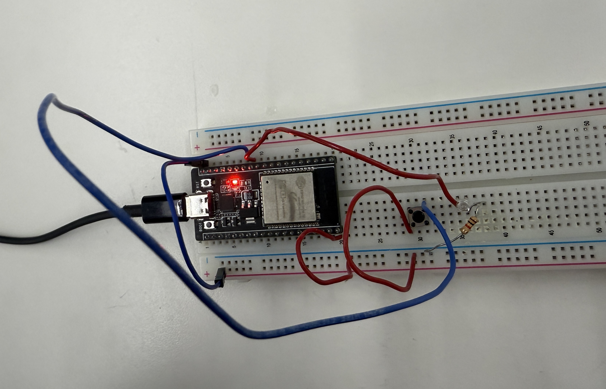

<div class="textcontainer">
<p class="margin"> </p>
<h3><a href="https://nathanmelenbrink.github.io/ps70/04_arduino/index.html" target="_blank" style="color:#b33b72;">Week 4:</a> Microcontroller Programming</h3>
<hr style="border: 1px solid #b33b72;">
On Tuesday, we continued learning about microcontrollers and practicing coding through Arduino! Then, on Thursday, we learned about servo motors and how to multi-task on Arduino.
<br><br>
During lab, we practiced some fundamental coding examples: a blinking LED, a LED controlled by a button, and a LED controlled by a potentiometer.
<br><br>
<div style="display:flex; justify-content:center; align-items:flex-start; gap:20px;">
<figure style="display:inline-flex; flex-direction:column; align-items:center;">
<video style="height:30vh; width:auto;" controls>
<source src="lab1.MOV" type="video/mp4">
</video>
<figcaption style="font-size:15px; text-align:center;">Blinking LED</figcaption>
</figure>
<figure style="display:inline-flex; flex-direction:column; align-items:center;">
<div style="display:flex;">
<p></p>
</div>
<figcaption style="font-size:15px; text-align:center;">Button Control</figcaption>
</figure>
<figure style="display:inline-flex; flex-direction:column; align-items:center;">
<video style="height:30vh; width:auto;" controls>
<source src="lab3.MOV" type="video/mp4">
</video>
<figcaption style="font-size:15px; text-align:center;">Potentiometer
Control</figcaption>
</figure>
</div>
<hr style="border: 1px solid #b33b72;">
<h4>Assignment: Program an Arduino board to do something </h4>
The assignment of this week was to program an Arduino board to do something. I wasn't feeling very creative, so I wanted to play around and see if the microcontroller could receive my text input to control an LED. My idea was that I could type a number into the Serial input, and the LED would flash for that certian number of seconds. This definitely was as not complicated as it could've been, but it was still pretty fun to figure out the coding!
<br></br>
<div style="display:flex; justify-content:center; align-items:flex-start; gap:20px;">
<figure style="display:inline-flex; flex-direction:column; align-items:center;">
<video style="height:30vh; width:auto;" controls>
<source src="ya.MOV" type="video/mp4">
</video>
<figcaption style="font-size:15px; text-align:center;">Here is a video of my assignment!</figcaption>
</figure>
</div>
<figure>
<pre style="background-color:#b33b72; color:#EEE7E8; padding:20px;
border-radius:8px; overflow-y:scroll; height:300px;
font-size:15px;margin-bottom:0;">
<code style="background-color:transparent;">int light4Pin = D6;
int light3Pin = D5;
int light2Pin = D4;
int light1Pin = D3;
char letter;
void setup() {
// put your setup code here, to run once:
pinMode(light4Pin, OUTPUT);
pinMode(light3Pin, OUTPUT);
pinMode(light2Pin, OUTPUT);
pinMode(light1Pin, OUTPUT);
Serial.begin(57600);
}
void loop() {
// put your main code here, to run repeatedly:
if (Serial.available()){
letter = Serial.read();
if (letter == '1'){
digitalWrite(light1Pin, HIGH);
delay(1000);
digitalWrite(light1Pin, LOW);
}
if (letter == '2'){
digitalWrite(light2Pin, HIGH);
delay(2000);
digitalWrite(light2Pin, LOW);
}
if (letter == '3'){
digitalWrite(light3Pin, HIGH);
delay(3000);
digitalWrite(light3Pin, LOW);
}
}
}
</code>
</pre>
<figcaption style="font-size:15px; text-align:center;">
Here is the code for my Arduino assignment!
</figcaption>
</figure>
</div>